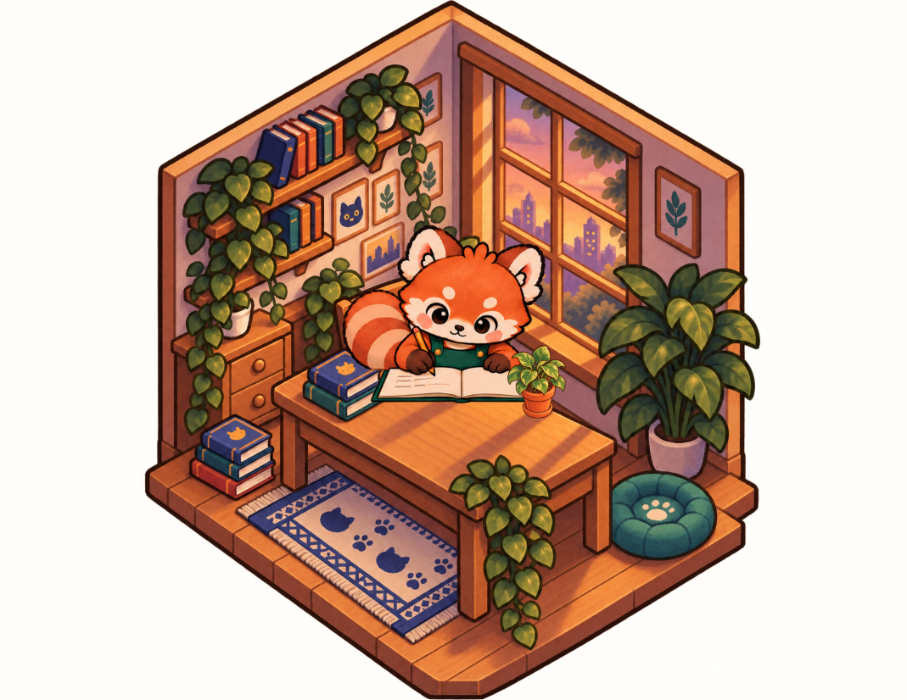
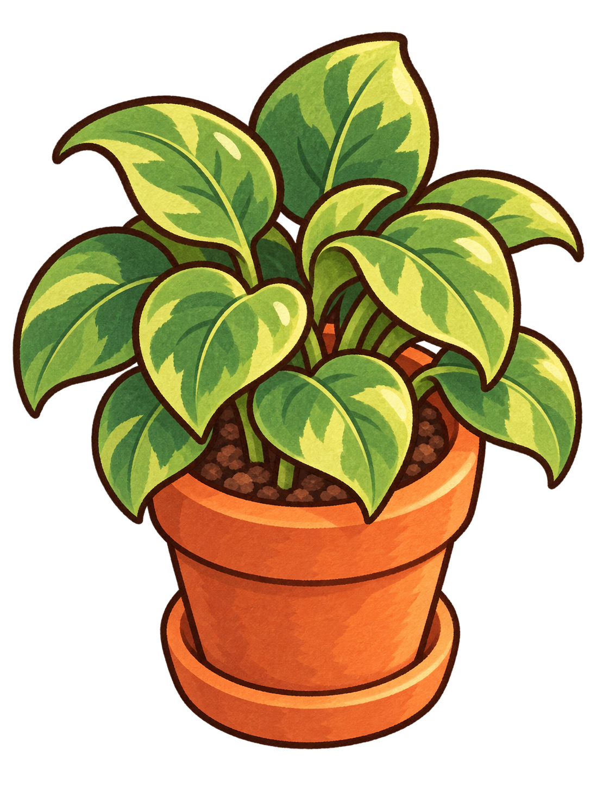

작은 집중방 · 디자인 개선 시안
왼쪽은 현재 Android 앱 캡처(393×786dp), 가운데는 같은 에셋과 Pretendard로 만든 제안 시안입니다.
남색 — 누르는 것 (주요 버튼, 선택)
노랑 — 선택된 값, 보상 하이라이트
파랑 — 보조 문구, 텍스트 링크
초록 — 완료 상태 전용
제안
5:34●●●
오늘도 같이 시작해요
D-30dele

오늘의 집중 · 5분
랫서팬더가 골라주기
집중 시작
홈
- ‘집중 시작’을 남색으로 채웠습니다. 지금은 노란 25분 티켓이 가장 눈에 띄는데, 이제 화면에서 가장 무거운 요소가 핵심 버튼입니다. 재생 아이콘은 노랑으로 바꿔 티켓과 연결했습니다.
- 하단 메뉴 85dp → 68dp. 일러스트 아이콘을 줄이고, 선택하지 않은 아이콘은 회색으로 낮췄습니다. 선택 상태는 크림색 알약 배경, 풀컬러 아이콘, 남색 굵은 글씨로 표시합니다.
- 메뉴에서 줄인 높이는 방과 티켓 사이 여백으로 돌렸습니다. 방 일러스트의 크기와 위치는 그대로 두었습니다.
- 헤더, 목표 줄, 티켓, 랫서팬더 링크는 현재 디자인을 유지합니다.
제안
5:35●●●
차근차근, 함께 써 내려가요
D-30dele
1분 체험 · 기록 없이
00:56
잠시 멈추기
이번 시간 종료
집중 중
- 겹치는 응원 문구를 하나로 줄였습니다. 헤더의 “차근차근, 함께 써 내려가요”만 남기고 “천천히, 한 줄씩 써봐요”는 뺐습니다.
- 타이머를 따로 한 줄에 크게 두었습니다 (38 → 60). “1분 체험 · 기록 없이” 같은 상태 문구는 타이머 위 작은 글씨로 옮겼습니다.
- 조작 버튼을 아래로 붙였습니다. 메뉴 자리만 비어 있던 빈 공간이 사라지고, 엄지가 닿는 곳에 ‘잠시 멈추기’와 ‘이번 시간 종료’가 있습니다. 방의 위치는 홈과 똑같이 유지됩니다.
- ‘잠시 멈추기’도 홈의 ‘집중 시작’과 같은 남색 주요 버튼 스타일을 씁니다.
제안
5:35●●●
목표와 다짐D-30 · dele
소리 기본 설정현재 소리 꺼짐
집중 완료 알림알림이 켜져 있어요
모은 소품1개의 작은 선물

짧게 집중하기
1분 체험 · 기록과 보상 없이 둘러보기
설정
- 기록 화면처럼 헤더에 랫서팬더를 넣었습니다. 일러스트가 없는 화면이 사라지고, 세 탭의 헤더 구조가 같아집니다.
- 목록 아이콘을 크림색 둥근 타일에 남색으로 넣었습니다. 이제 파랑 아이콘이 버튼처럼 보이지 않고, 홈의 크림/남색 팔레트와 이어집니다. ‘모은 소품’ 줄에는 실제 화분을 미리 보여줍니다.
- ‘5분/15분 집중’을 홈과 같은 티켓 모양으로 바꿨습니다. 초록 테두리 알약 버튼은 홈의 집중 선택과 다른 기능처럼 보였습니다. 초록은 이제 완료 표시에만 씁니다.
- 목표 줄에는 남은 날짜(D-30)도 함께 보여줘서 들어가지 않아도 상태를 알 수 있습니다.
제안
5:35●●●
이번 달 10분
집중한 날 2일
2026년 10월
10월 8일 목요일 오늘
5분 집중1회 완료
5분 집중 완료오후 5:21
1분 미만 · 중도 종료오후 5:21
기록
- “0분 중도 종료”를 “1분 미만 · 중도 종료”로 바꾸고 흐리게 처리했습니다. 완료 기록이 먼저 읽힙니다.
- 달력의 날짜를 세 단계로 나눴습니다. 지난 날은 실선 원, 아직 오지 않은 날은 연한 점선 원, 집중한 날은 스탬프입니다. 빈 원 31개가 같은 무게로 보이던 문제가 줄어듭니다.
- 상단 요약 아이콘을 초록에서 남색으로 바꿨습니다. 초록은 완료 체크에만 씁니다.
- 메뉴가 낮아진 덕분에 오늘의 기록 두 줄이 메뉴에 가려지지 않고 모두 보입니다.